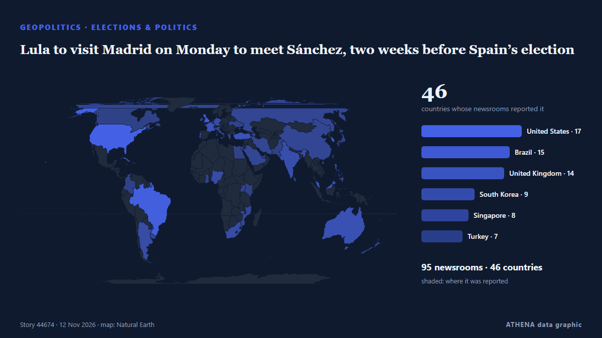

Γεωπολιτική, Πολιτική & Ασφάλεια
ΧορηγούμενοΠαρουσιάζεται από  Cybernetics and Artificial Intelligence Lab Welcome to the Cybernetics and Artificial Intelligence Laboratory, established at the Department of Business Administration of the National and Kapodistrian University of Athens. The lab is headed by Professor Dimitrios Thomakos. The lab aims to do research that can be published in top venues. Our research uses tools and methods of Artificial Intelligence, and lies in the following areas: - Forecasting - Decision making - Cyber security - Finance We are always looking forward to collaborating with exceptional students!
Cybernetics and Artificial Intelligence Lab Welcome to the Cybernetics and Artificial Intelligence Laboratory, established at the Department of Business Administration of the National and Kapodistrian University of Athens. The lab is headed by Professor Dimitrios Thomakos. The lab aims to do research that can be published in top venues. Our research uses tools and methods of Artificial Intelligence, and lies in the following areas: - Forecasting - Decision making - Cyber security - Finance We are always looking forward to collaborating with exceptional students!
Οι τίτλοι των ειδήσεων παρουσιάζονται στα αγγλικά, όπως δημοσιεύτηκαν.

Εκλογές & πολιτικήLula to visit Madrid on Monday to meet Sánchez, two weeks before Spain’s election
Lula’s re-election makes it more likely Brazil can meet a key goal to end forest loss in the Amazon and builds confidence in a new fund to protect the world's rainforests, experts say. από Climate Home News
| 31 Οκτ | 153 |
|---|---|
| 1 Νοε | 212 |
| 2 Νοε | 316 |
| 3 Νοε | 352 |
| 4 Νοε | 397 |
| 5 Νοε | 328 |
| 6 Νοε | 227 |
| 7 Νοε | 211 |
| 8 Νοε | 200 |
| 9 Νοε | 314 |
| 10 Νοε | 288 |
| 11 Νοε | 250 |
| 12 Νοε | 229 |
| 13 Νοε | 57 |
Russian military officer killed in car explosion in St. Petersburg
A Russian serviceman was killed when an explosive device detonated in his car in St Petersburg on 12 November. από Ukrainska Pravda (English)
'Ireland has set the bar very high,' say hosts of next European Political Community summit
Around 50 leaders are expected in the capital for talks on European security, Ukraine and other shared challenges | follow for updates. από Irish Examiner
Iran's Guards say they targeted a US early-warning radar in Bahrain
The Guards said the strike was in retaliation for what they described as an air attack on a telecommunications tower in Iran's southern Sirik county. από Free Malaysia Today
Putin meets US envoys in Moscow
Ukrainian President Volodymyr Zelenskyy says disruptions to the Starshield satellite communications service - the military version of Elon Musk's SpaceX's Starlink - is affecting the Ukrainian front… από ABC News Australia
Abdul El-Sayed on Democratic leadership, health care access and inspiring a new generation
With New Hampshire and Georgia staying in Democratic hands, Republicans now look to Michigan for a pickup, where Democrat Abdul El-Sayed is competing with Republican Mike Rogers. από France 24 English
Hegseth pins medal on soldier who reprimanded his group for laughing at Tomb of the Unknown Soldier
Hegseth’s group sparked online backlash after laughter at the memorial went viral on Veterans Day. από The Independent
Kushner says US working toward 'largest prisoner exchange' of Russia's war in Ukraine
WASHINGTON: US President Donald Trump’s envoy and son-in-law Jared Kushner said on Thursday Russia and Ukraine agreed to expand the next round of talks to include European nations and that… από Arab News
3 injured, dozens evacuated after Russian drone damages Kyiv medical facility in overnight attack
A downed drone caused a fire at a medical facility in the capital's Shevchenkivskyi district in the early morning, partially destroying its second floor, according to Ukraine's State Emergency… από Kyiv Independent
Trump says US does not need Iran deal, directs Vance to focus on domestic corruption
By Bo Erickson WASHINGTON, Nov 12 (Reuters) - President Donald Trump saidon Thursdaythe US does not need a deal with Iran and directedVice President JD Vance, who has played a role in efforts to… από Al-Monitor
LOCAL ELECTIONS 2026: LIVE | First results show ANC support declined in traditional strongholds
Special voting gets underway on Monday and will continue on Tuesday. από SABC News
Trump says Gulf allies urged restraint on Iran, admits war hurt Republicans in midterms
With the political constraints imposed by the US midterm elections lifted, Donald Trump may become more erratic and unpredictable. από The Scotsman
Ukraine and Russia agree to large-scale prisoner exchange after second day of talks
Thousands of Ukrainians are held in Russian captivity. από The Independent
Democrat Colom wins Mississippi Senate seat, becomes state’s first Black senator since 1874
He became the first Democrat to win a Mississippi Senate seat since John Stennis in 1982. από The Straits Times
Singapore bars Alice Huang from reentry, says investigation into Megaspeed remains ongoing
Singapore said it independently investigated Hong Kong resident Alice Huang and Singapore-registered Megaspeed International over suspected false declarations involving servers exported through… από DigiTimes Asia
With US midterms underway, courts rebuff Trump's pressure on state election officials
Federal judges have repeatedly rejected the Trump administration's efforts to wrest control over state voting processes and intimidate state and local elections officials. από Los Angeles Times (World)
Russian ambassador to US Alexander Darchiev dies suddenly at 66
The announcement called Darchiev ‘an outstanding diplomat, an experienced leader, a kind friend, and a mentor’ από The Independent
US envoys meet with Putin in the Kremlin after Ukraine talks in Abu Dhabi
The Russian leader still believes he can outlast Western support for Ukraine. από Al Jazeera English
Russia-US-Ukraine trilateral talks resume for second day in Abu Dhabi
Rustem Umierov said Ukraine's team is en route to Abu Dhabi for trilateral talks on 10-11 November, with European and NATO representatives also attending. από Ukrainska Pravda (English)
Peru: Pope Leo XIV returns to his adopted homeland on historic visit
Pope Leo XIV received a rapturous welcome in Peru, on 11 November, where he spent more than two decades as a missionary and bishop. από Euronews English
Saudi coalition says intercepted 3 Houthi missiles fired at Riyadh
Saudi-led coalition claims Houthi missile destroyed over Eastern Province The Saudi-led coalition air defences intercepted and destroyed a ballistic missile launched by the Houthis toward the… από Middle East Eye
Democratic leader Hakeem Jeffries announces bid for US House speaker
'I write to humbly request your support in connection with my candidacy to serve as the next Speaker of the House of Representatives,' says Jeffries in letter. από Anadolu Agency (English)
US asks Iraq to shut most Iran border crossings, Iraqi foreign minister says
Nov 8 - The US Treasury has asked Iraq to close all border crossings with Iran except for two as part of Washington's policy of increasing economic pressure on Tehran, Iraqi Foreign Minister Fuad… από The Straits Times
Iran will strike US bases in Europe in any war, warns Rezaei
Iranian officials have explicitly threatened in recent weeks to strike US military bases in Europe if they are used to launch attacks against Iran. από The New Arab
Iran designates Argentina's navy and air force as 'terrorist organisations'
Tehran has designated Argentina’s navy and air force as “terrorist organizations,” Iran’s Foreign Ministry said on Wednesday, in a reciprocal move following Buenos Aires’ designation of the Islamic… από Cyprus Mail
Turkish parliament approves Mecca defense pact with Pakistan and Saudi Arabia
Opposition Republican People’s Party (CHP) leader Kemal Kılıçdaroğlu has stated his party will vote in favor of a defense agreement between Türkiye, Pakistan and Saudi Arabia when it comes before… από Hürriyet Daily News
US House blocks bid to impeach Defense Secretary Hegseth
Republicans in the US House of Representatives blocked an effort on Tuesday to impeach Defense Secretary… από BusinessWorld
Drone attack triggers fire in Russia’s Baltic port of Ust-Luga, Ukraine says it launched attack
Ust-Luga is a major oil, oil products and grain export outlet, along with other commodities. από The Straits Times
Kennedy Family Sues To Block Trump’s 250-Foot Arch—Says It Would Cast Shadow On JFK’s Grave
Nine members of the Kennedy family are seeking to join a lawsuit to block the construction of President Donald Trump’s planned triumphal arch in Washington, D.C. από Forbes Business
US soldier arrested for Russia spying: What we know
A US Army member has been arrested by UK police under the National Security Act for allegedly assisting Russia. από Arab News
US charges 3 men over alleged Iranian-backed plot at UK Fairford air base
The men, including one who is already in jail, face charges over alleged plot at UK air base used in US war on Iran. από Al Jazeera English
Suspected drone attack halts production at Khor Mor in Kurdistan Region of Iraq
Production at the Khor Mor gas facility in Iraq’s Kurdistan Region remains suspended after a suspected drone attack on Nov. από World Oil
US Offers Up to $20 Million Reward for Information on Iran’s Nuclear Program
WASHINGTON, Nov 7: The United States has announced a reward of up to $20 million, along with possible relocation, for information about Iran’s nuclear program, including its facili... από Arab Times
Russian negotiator rejects territorial swaps with Ukraine as Abu Dhabi talks end
Vladimir Medinsky — presidential aide and longtime chairman of the Russian Military Historical Society (RVIO) — once again led the Russian delegation at trilateral talks in Abu Dhabi. από Meduza (English)